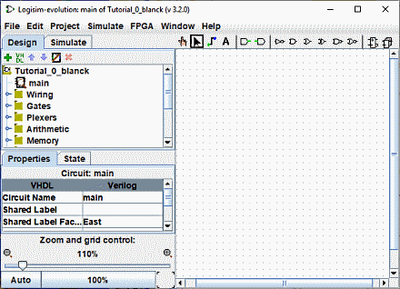

返回： 入门教程
启动 Logisim 后，会看到类似下面的窗口。不同系统下，一些细节可能略有差异。

Logisim 窗口整体分为三个部分，分别是资源管理器窗格、属性表和画布。这些部分之上是菜单栏和工具栏。
资源管理器窗格和属性表可以暂时略过：本教程不会涉及它们。此外，菜单栏的作用也比较直观。
剩下的是工具栏和画布。画布用于绘制电路；工具栏则提供完成这一任务所需的工具。
下一节： 第 1 步：添加门电路